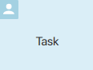
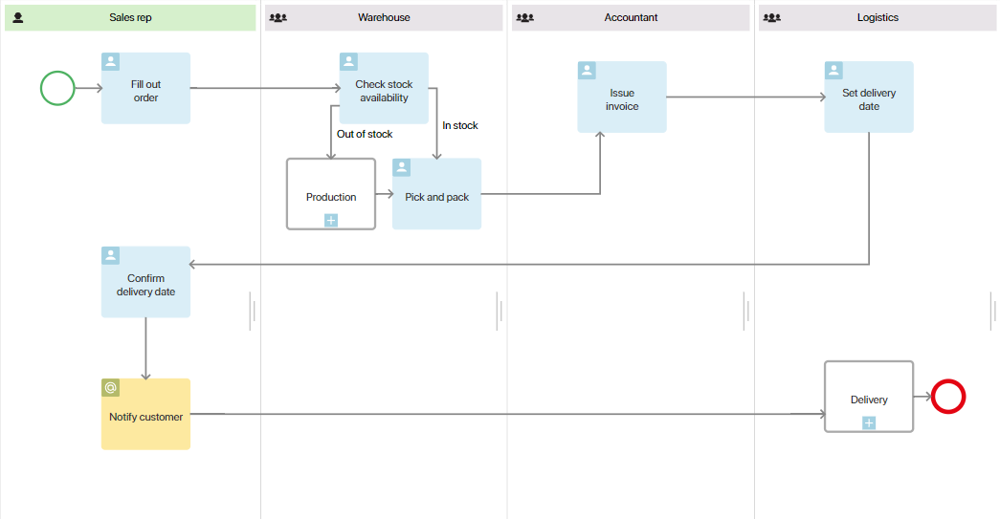
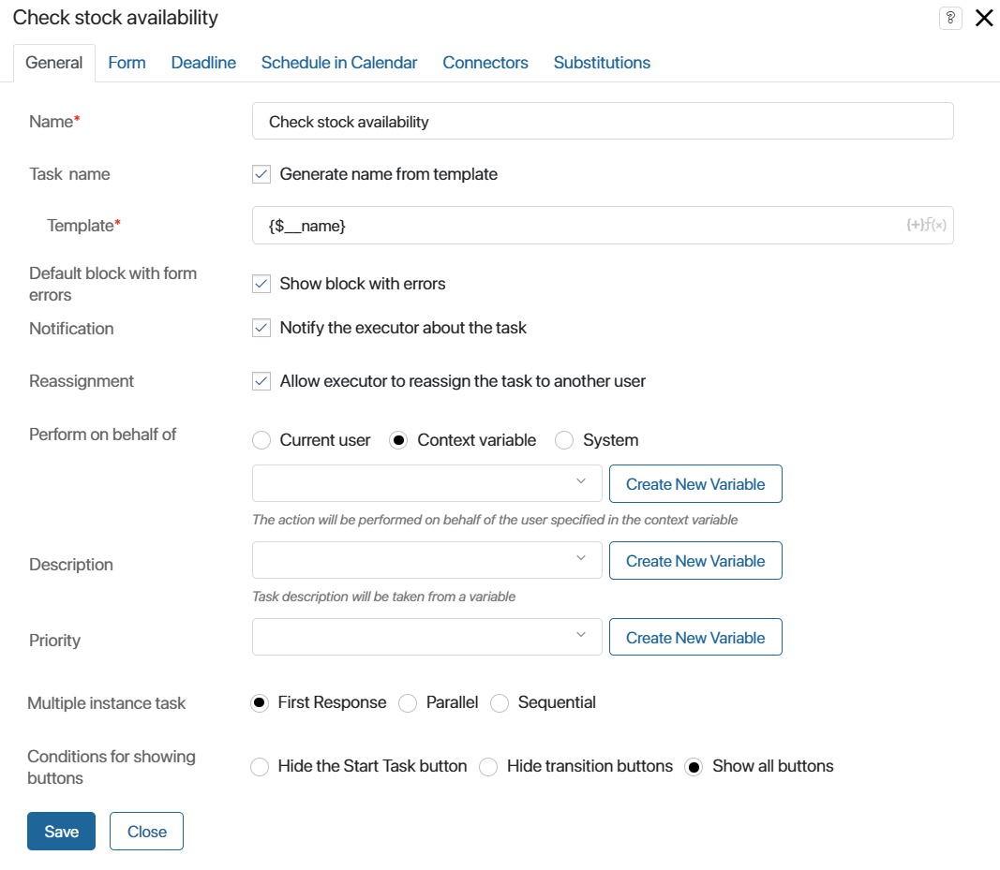
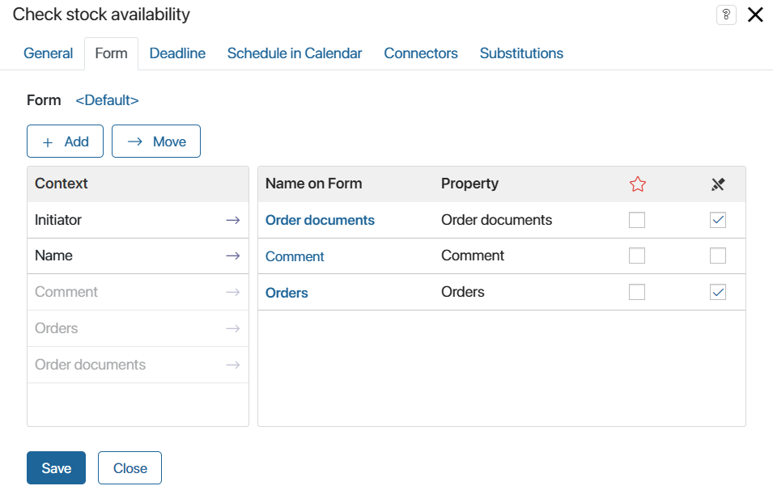
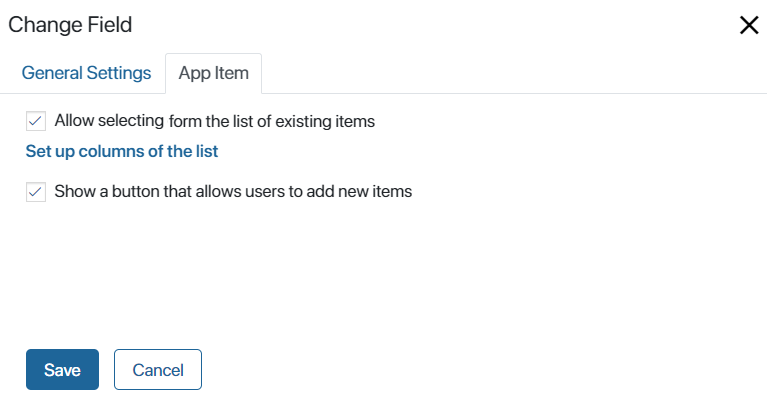
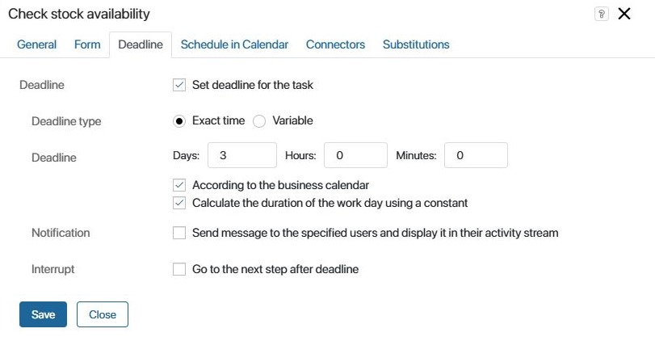
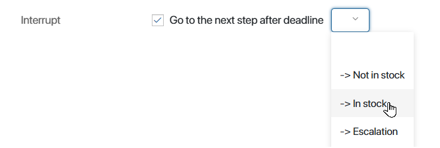
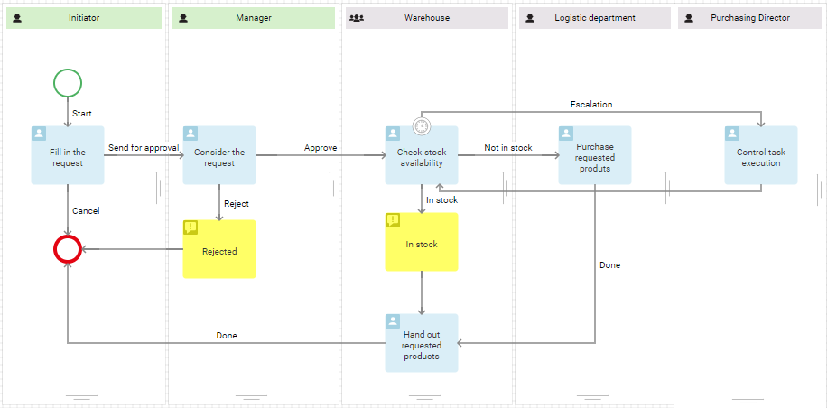
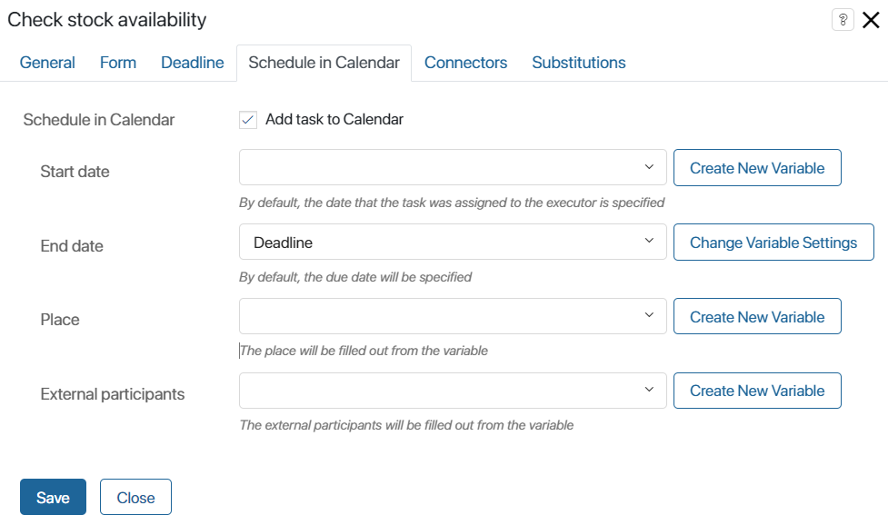
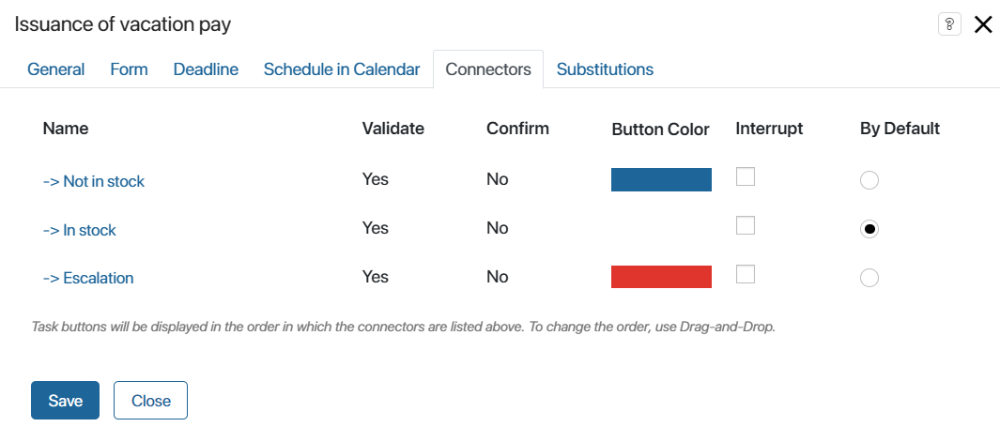

A task is performed by an employee as a part of a business process. Tasks are assigned automatically in the order they appear in the process diagram. They represent the steps that the process participants have to complete to achieve a specific outcome. For example, in the order management process, employees will fill out the order form, check stock availability, pick and pack the order, etc.

Configure a user task
There are five tabs with settings: General, Form, Deadline, Schedule in Calendar, Connectors, and Substitutions.
You can add a template for the task name, select multiple-instance execution, change the form, specify a deadline, etc.
Double-click on the task shape in the process diagram to open the settings window.
General tab
The General tab contains the main information about the task:

- Name*. Specify the name of the task on the process diagram. Keep it short so that the diagram is easy to read.
- Task name. Select the Generate name from template option to include context variables into the name that the user will see in their task list and on the task page.
- Template*. Click the {+} icon in the right corner of the field and select a variable. You can also include conditions and functions to generate the item name according to a template. This will allow you to create a more informative name for the task. If this option is not used, the text specified in the Name* field will be displayed in the task list and on the form.
- Default block with form errors. Enable the option to show a widget with a list of errors if there are errors in the fields of the task form. It is checked that the user specified the data correctly in accordance with the settings of the system data types.
- Notification. When this option is selected, the executor will be notified in the #Activity stream about the assigned task. For the executor to additionally receive email notifications about new tasks, they need to enable this option in their profile settings.
- Reassignment. Use this setting to allow or forbid an employee to reassign a task to other users.
- Perform on behalf of. Select who will be specified as the task author:
- Current user. The person who started the process instance is specified.
- Context variable. Select a Users variable of the One type from the process context. The employee stored in this variable will be specified as the task author. For example, it can be the user who belongs to the swimlane where the previous tasks are located.
- System. The task will be assigned by the user selected as the system supervisor.
- Description. Choose a String type variable from the process context to display an expanded description of the task. The value of the variable can be assigned within the script written in TypeScript. For example, you can place the Script activity before the task in the process diagram. You need to add the variable with the description in the task form settings.
- Priority. Select a Number type variable from the process context to display the urgency of the task. The variable can be filled with any numerical value within the script written in TypeScript.
- Multiple instance task. This setting is available only if a swimlane represents a group of users or a department. The task will be assigned to all employees within the group or department, but the system’s behavior will depend on the option selected:
- First Response. All the executors represented by the swimlane will be simultaneously assigned the task. Once somebody starts working on the task or marks it as completed, it will disappear from the task list of the other executors. You can additionally set up the task using one of the following options:
- Hide the Start Task button. In this case, only transition buttons will be displayed on the task form. Any employee from the group will be able to complete the task without actually starting working on it. This option is best for quick tasks.
- Hide transition buttons. There will only be one button displayed on the form: Start Task. After the employee clicks on it, the task will be assigned to them individually, and transition buttons will appear on the form.
- Show all buttons. The Start Work button and the transition buttons will be all displayed on the form. One of the employees from the group will be able to assign the task to themselves or mark it as completed right away.
- Parallel. The task will be assigned simultaneously to all executors specified in the swimlane settings. The process will continue only after all executors complete the task.
- Sequential. The task will be assigned to the executors of the swimlane one by one. The process will continue only after all executors complete the task.
If you select the Parallel or Sequential option, you need to:
- Specify the default connector on the Connectors tab.
- Set the conditions in the connector settings. To learn more, see Connectors.
Note that in a dynamic swimlane, the tasks are assigned in the same order as the variable storing the executors was filled in. In a static swimlane, the order is random.
Take a look at the following examples to better understand how different types of multiple instance tasks work.
начало примера
Example 1
Consider the operation of a warehouse. Any warehouse employee can prepare goods for shipping. It does not matter who exactly will be doing the packaging; what really matters is that the task is completed as fast as possible. If you select the First Response option, the task will be assigned to all the warehouse employees, and the person who is less busy at the moment will be able to immediately start working on it. As soon as BRIX that the employee has started the task (the employee needs to click on the confirmation button on the task page), the task will be canceled for other executors.
конец примера
начало примера
Example 2
After a meeting, all the participants should receive the minutes of meeting. It is important that every employee who attended the meeting receives and reads this document, but the order in which people complete this does not matter. If you select the Parallel option, all meeting participants will be assigned the task Read minutes of meetings, and until each of them completes the task, the process will not continue.
конец примера
начало примера
Example 3
Suppose that several managers need to read and approve a report before the process continues. If you select the Sequential option, the system will first assign the task of reviewing the report to one manager, and after he or she approves the document, to another. In the connectors settings, you can specify how the system should behave if someone from the approvers rejects the report. To find out how to do it, see Connectors.
конец примера
Form tab
On this tab, you can configure what the task form will look like.

The Context column lists the fields added to the process context. To display them on the task page, drag them into the Name on Form column. Mark the required  and read-only fields.
and read-only fields.
To create a new property, click the +Add button. The property will appear in the Context column as well as in the process context.
Property display settings
To modify the settings of a field, click on it in the Name on Form column. You can edit the name and the tooltip text, make it required, and so on.
For the App type field, depending on its settings, additional tabs are available:
- If the Read only option is enabled, the Properties tab appears.

On this tab, the Context column shows the properties of the selected app. You can add them to the task form by dragging them into the Name on Form column. These properties will be displayed on the task page under the app field.
- If the Read only option is disabled, the Add Item tab is available.

Here you can specify how the field will be filled.
To allow the user to select an existing app item, check the Allow selecting from the list of existing items option. You can edit the item table that will be displayed in the item selection window by clicking Set up columns of the list. In the window that opens, add fields to be used as table columns and configure sorting.
To enable the user to add a new item from the task page using the +Create button, enable the Show a button that allows users to add new items option.
If the field on the task form is editable, and the user doesn’t have the corresponding access to the app, they will automatically gain permission to fill out the field on the task form. The user doesn’t get direct access to the app and won’t be able to edit its fields after filling out the form.
You can modify the standard task form and create a template in the Low-code designer. Read more in the Forms tab article.
Deadline tab
For some tasks, it is crucial to meet deadlines and stay on schedule. This is especially true for customer communications. Quickly handled requests and timely delivered goods provide your competitive advantage.
On this tab, you can customize the deadlines for the task, as well as determine what happens if the task is not completed on time.

There are two ways to set the task deadline:
- Exact time. Specify how many minutes, hours, or days will be spent on the task. The deadline can be specified taking into account the settings of the current business calendar. In this case, non-working hours are not included in the calculation of the due date.
- Variable. Sometimes it is impossible to determine how much time it requires to complete the task, but it is important that the work is done by a specific date. For example, an employee specifies the leave start and end dates, and the accountant must calculate the vacation pay and give the money 3 days before the employee takes their vacation. In this case, determine the task completion time as a context variable and specify it in the Deadline field.
- Change time. Use this option to add or subtract days, hours, or minutes from the time stored in the variable. Select Add or Subtract, and enter the number of days, hours, or minutes. The deadline will be changed accordingly. You can also limit the execution time considering the current business calendar in the same way as you do when setting an exact time for the task deadline.
When specifying the deadline for a task, you can activate the following options:
- According to the business calendar. The deadline is calculated according to the business calendar and does not include non-working hours of the employee.
- Calculate the duration of the work day using a constant. This option is available when the business calendar is taken into account. It allows calculating the task deadline based on the number of working hours per day. The time specified in the business calendar settings in the Standard work schedule field is used for calculation.
начало внимание
If the calendar settings are edited, the process should be published again to apply the new work schedule to the due dates of the tasks.
конец внимание
Examples of calculating the deadline for tasks
When setting the due date without additional options, only the specified days, hours and minutes will be taken into account. A task can become overdue during the employee’s non-working hours. For example, a user works Monday through Friday from 9 AM to 6 PM. He is assigned a task for two days on Friday at 5 PM. This means that it will be considered overdue tomorrow at 12 AM. If you set a deadline of six hours, the task will be overdue today at 10 PM. A task is assigned to them with a two-day deadline at 5:00 PM on Friday. This means the task will be considered overdue at 12:00 AM on Sunday. If you set a deadline of six hours, the task will be overdue at 10:00 PM on the same day.
Suppose you have assigned a task to the same user, also with a deadline of two days, at 5 PM on Friday, but taking into account their working calendar. In this case, the first day to work on the task will be Friday, and the deadline will be Monday at 6 PM. Saturday and Sunday are excluded from the calculation as weekends. If you set the deadline in hours, the task will be overdue on Monday at 3 PM. One work hour on Friday and five hours on Monday will be counted. The time between 1 PM and 2 PM is lunchtime.
When using the business calendar, you can also take into account the number of working hours per day by using the Calculate the duration of the work day using a constant option. Then, in our example, if the task duration is measured in days, it will be overdue on Tuesday at 5 PM. The standard number of working hours for the user is eight. On Friday they only have one hour to work on the task, Saturday and Sunday are days off, on Monday they have a full day of eight hours, and the missing seven hours are transferred to an extra day. The calculation of the task completion time in hours is not affected by using this option, because by default the employee’s working hours are taken into account.
If a user is assigned a calendar with a different number of working hours each day, the Calculate the duration of the work day using a constant option will take into account the time specified in the calendar settings in the Standard work schedule field. In this case a situation may occur when a task will be overdue during the employee’s non-working hours. Or its actual due date will be delayed by several days. When taking into account the working calendar with irregular working hours, we recommend setting the due date in hours and minutes without using the Calculate the duration of the work day using a constant option. |
Sometimes tasks are not completed on time despite the deadlines. In this case, control tools are needed to timely respond to the situation and take necessary measures.
In the Notification field, you can specify the employees who will receive a notification if the executor does not meet the deadline. You can add a current user, a context variable (for example, the Initiator), a user group, or an org chart item to determine the notification recipient.

In the Interrupt field, define the next process step in case the executor does not complete the task in time.

The process will automatically go down the selected connector if the task deadline is not met and the executor does not confirm that the task has been completed. In the process diagram, such connector has a clock icon.
начало внимание
The connector specified in the Interrupt field does not appear as a button on the task page.
конец внимание

For example, it may be very important for your company to meet the order processing deadlines. Warehouse employees must timely check stock availability and, if necessary, purchase the missing goods. This task is limited in time. If the employee doesn’t meet the deadline, the task is automatically assigned to the purchasing manager to deal with the situation.
Schedule in Calendar tab
This tab appears if a deadline is set for the task. On this tab, you can enable the task to appear in the executor’s calendar.

- Start date, End date. Specify the variables of the Date/Time type that store the start and end dates of the task from the process context. These variables determine the period during which the event will be displayed in the user’s calendar. Variable values can be assigned within a script written in TypeScript. For example, you can place the Script activity before the task in the process diagram.
To avoid overloading the calendar, you can schedule a task in it only for specific days. For example, if the task’s duration is one week, you can display it in the calendar only for the last three days of that period. To do this:
- Add Date/Time type variables to the process context, where the values for the task deadlines in the calendar will be recorded.
- On the process diagram, place a script that calculates the values of these variables before the Task item.
- On the current tab, link the Start date and End date fields with these variables.
- Place. Choose a String type variable where the event location is stored.
- External participants. Specify which clients from the Contacts app will participate in the task. For this, select an App type variable that stores the Contacts app of the CRM workspace and can store Many values. You can choose an existing variable from the dropdown list or create a new one.
Connectors tab
On this tab, you can configure all the outgoing task connectors: edit the name, add a confirmation box, change the button color, etc. To open these settings, click on the name of a connector. To learn more, see Connectors.

If you have selected Parallel or Sequential execution, additional settings will appear on the Connectors tab:
- Interrupt. Enable the option so that when a user selects the connector, the task is canceled for the rest of the employees.
- By Default. Specify the connector by which the process will continue if none of the participants selects other options. To learn more about using this option, see the Connector use cases article.
Substitutions tab
On this tab, you can specify a variable that controls the reassignment of a task to an employee who substitutes the primary executor.

In the Ignore substitution field, specify a Yes/No switch variable from the business process context.
If the variable is set to Yes, the task will go to the originally specified executor, and if set to No, it will go to the substituting employee. The value of the variable can be changed during the business process, for example, by presenting the variable on the form of another task or using scripts.
For instance, ignoring substitution can be useful if the task contains confidential data that should not be shared with third parties.
Found a typo? Select it and press Ctrl+Enter to send us feedback